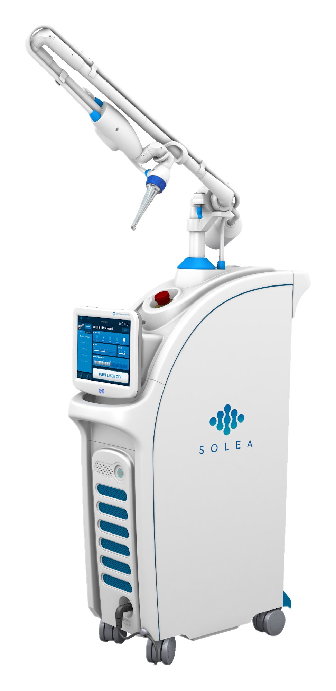
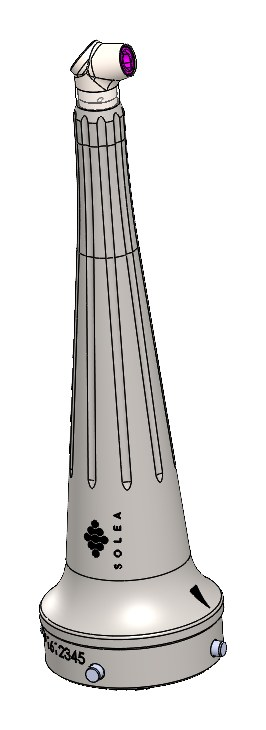
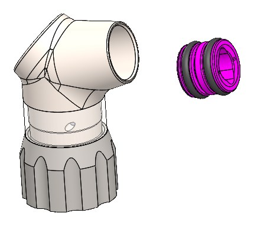
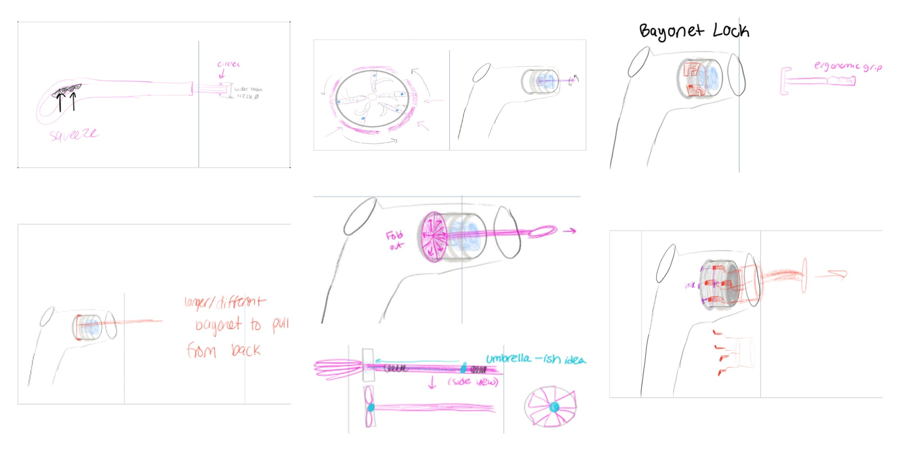
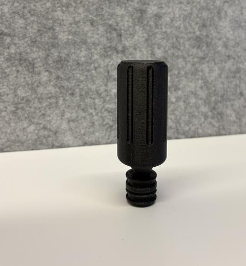
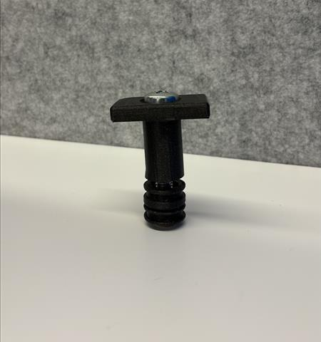
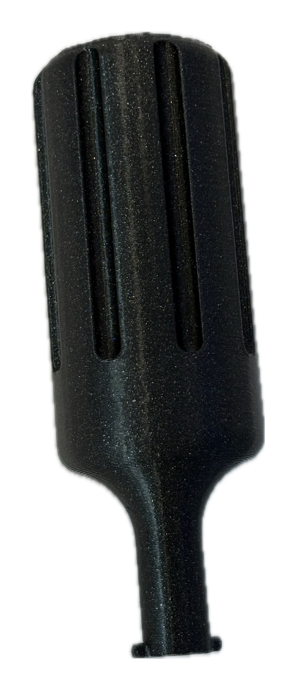
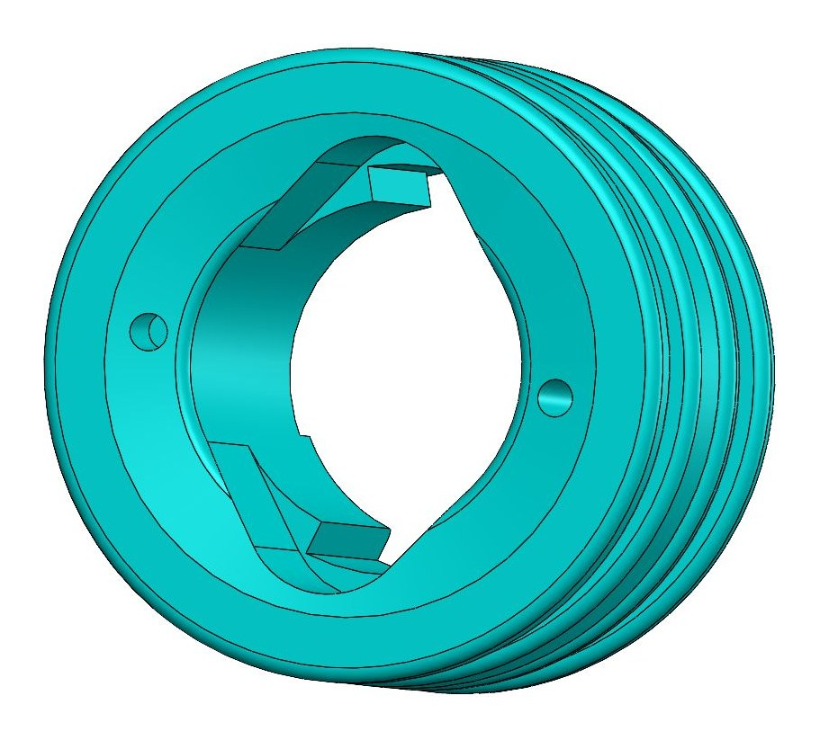
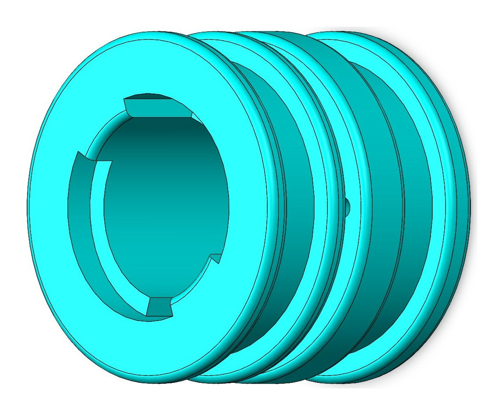
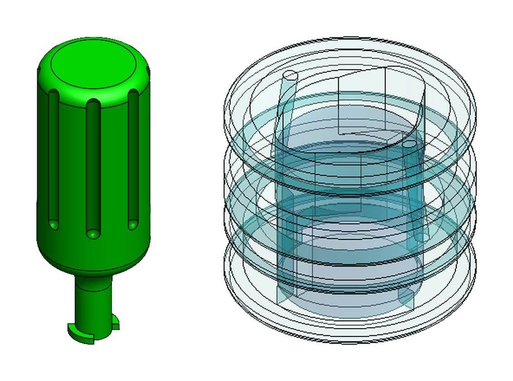

Mist Nozzle Removal Tool
A hand tool and a redesigned mist nozzle that let the nozzle on the Solea Contra handpiece be removed and replaced with a tool instead of by hand.
Problem
The mist nozzle on the Solea laser's Contra handpiece is small and hard to grip, so it is difficult to remove by hand. The goal was a hand tool that removes and replaces the nozzle without damaging it or the handpiece, so the swap would not need a field service engineer.






01Concept Generation
I sketched a range of removal concepts and ways for a tool to grip the nozzle.


02Iterative CAD Design
I modeled three tool concepts in SOLIDWORKS: a slotted grip tool, a rod tool and a T-handle tool.


033D Printed Prototypes
I printed the concepts and tried each one on the nozzle.




04Down Selection
I selected the slotted grip tool. In prototype testing it was easier to rotate than the rod and T-handle concepts, and it matched the look of the other tools.


05Prototype Refinement
I redesigned the mist nozzle as well as the tool. The new nozzle has tool alignment slots and turning lock tabs, and the tool was refined to engage them in a slide–twist–pull sequence: slide the tool on along the slots, twist to engage the lock tabs, then pull the nozzle off.






Results & Impact
- Designed both the removal tool and a redesigned mist nozzle with tool alignment slots and turning lock tabs.
- Intended benefit: nozzles can be swapped with a hand tool instead of a field service visit. This has not been measured, because the design is not deployed.
- Status: 3D-printed functional prototypes; not yet deployed.